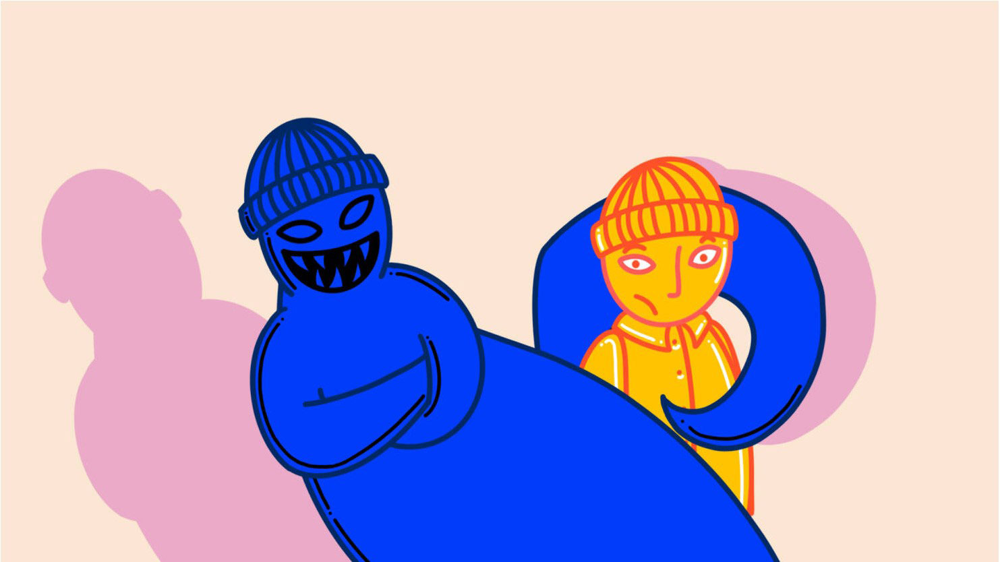
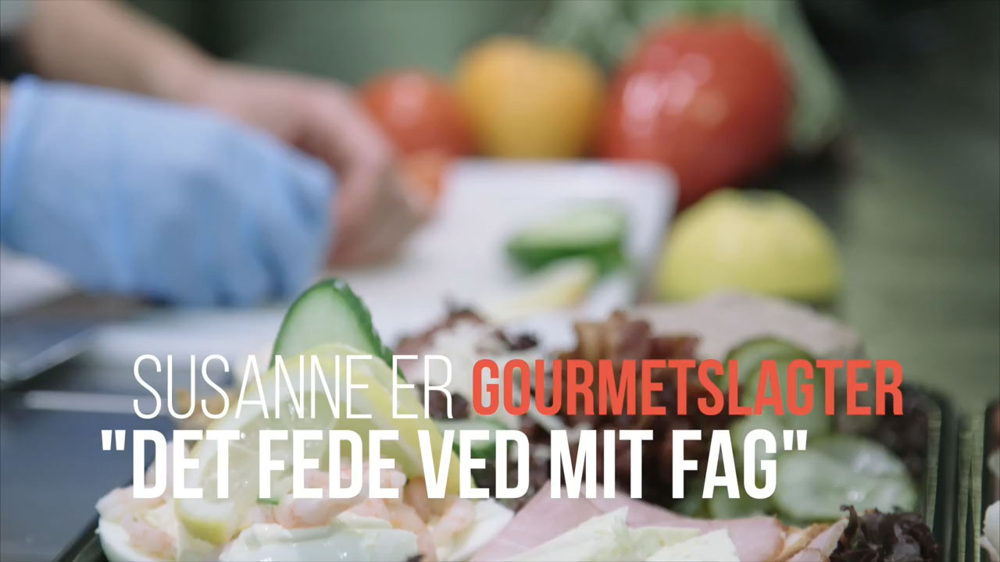
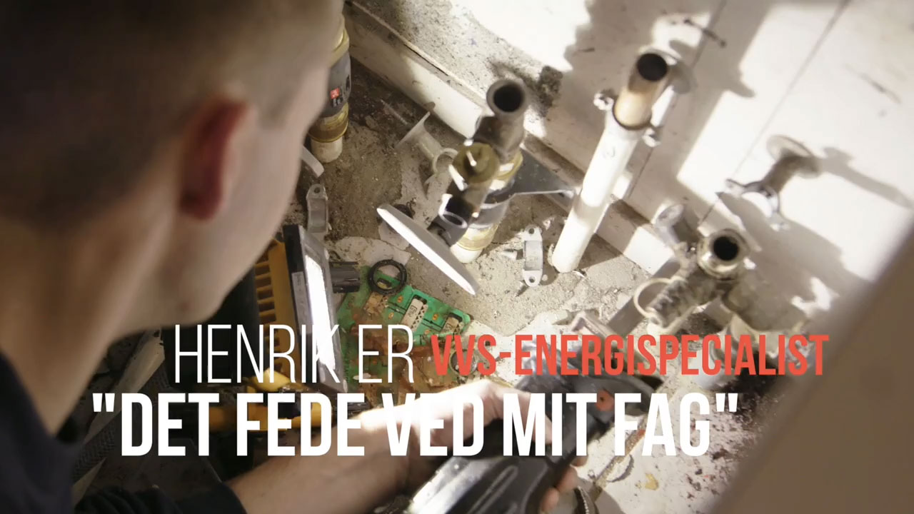
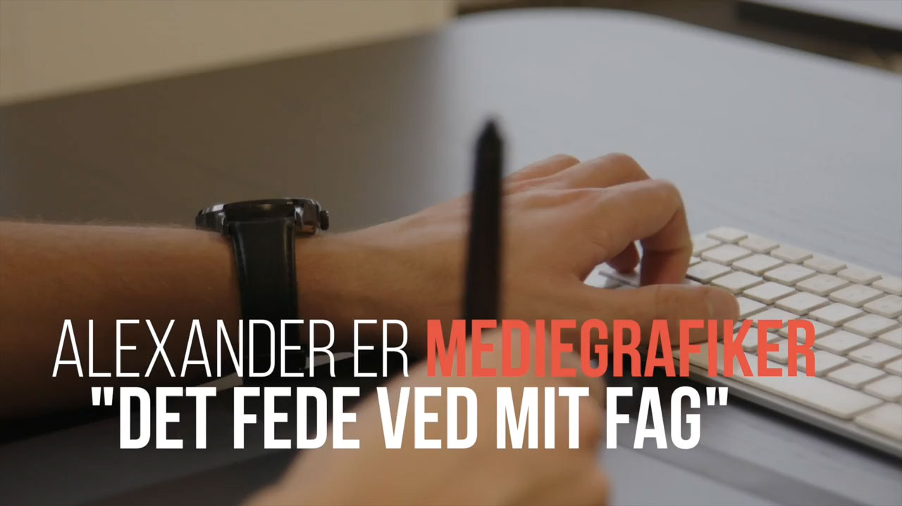
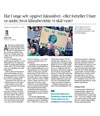

FP9 Dansk, skriftlig fremstilling
Du skal vælge en af disse opgaver:
1 Et overfald
2 Jeg er ofte en dårlig ven
3 Det fede ved mit fag
4 Er du optaget af klimaet?
Du skal skrive den valgte opgaves nummer og titel på din besvarelse.
1 Et overfald
2 Jeg er ofte en dårlig ven
3 Det fede ved mit fag
4 Er du optaget af klimaet?
Du skal skrive den valgte opgaves nummer og titel på din besvarelse.
Mandag den 2. maj 2022
Kl. 9.00-12.30
Prøvetiden er 3,5 time
Før du skriver
Til eleven
Til denne prøve i skriftlig fremstilling har du adgang til internettet.
Du må ikke kommunikere eller dele dine dokumenter med andre under prøven.
Hvis du i din tekst anvender informationer, citater, billeder, ressourcer fra internettet eller fra andre steder, skal du angive kilderne sidst i besvarelsen. Hvis du anvender kilder fra prøveoplægget, behøver du ikke at angive dem i din tekst.
Din tekst vurderes på, hvor godt du udfolder de tre vurderingsdimensioner funktion, indhold og form på en sammenhængende og meningsfuld måde i din tekst.
Se vurderingskriterierne nedenfor.
God arbejdslyst!
Vurderingskriterier til eleven
Der gives én karakter baseret på en helhedsvurdering af tre dimensioner funktion, indhold og form
| Vurderingsdimension | Vurderingsområde | Vurderingsspørgsmål |
| Funktion | Skrivesituation | I hvilken grad fungerer din tekst i den skrivesituation, som opgaven beskriver? |
| Opgavens krav | I hvilken grad opfylder du opgavens krav til afsender, modtager og fremstillingsformer? | |
| Indhold | Mening | I hvilken grad udtrykker din tekst et meningsfuldt indhold? |
| Ressourcer | I hvilken grad bruger du opgaveforlægget, din egen faglige viden og internettet i din tekst? | |
| Form | Tekstsammenhæng | I hvilken grad hænger din tekst sammen sprogligt, og er der velvalgte afsnit og modaliteter? |
| Skrift og andre modaliteter | I hvilken grad bruger du tegnsætning, tekstbehandlingsprogrammets funktioner og ord, så det understøtter den situation, teksten skal bruges i? |
1 Et overfald
Se filmen Robin Robin:
Kilde: Stockholms Filmskola, 2018.
Kortfilmen Robin Robin foregår i Sverige, men kunne lige så godt foregå i Danmark.
Forestil dig, at hændelsen var virkelig. Du er i praktik på en avis og skal skrive en artikel om overfaldet.
|
Skriv en artikel til en avis.
Som forberedelse til din tekst skal du se filmen Robin Robin og søge faktaoplysninger om voldelige overfald i Danmark. Desuden skal du forestille dig, at du har lavet et interview med offeret og et vidne. Du skal inddrage begge dele i din tekst. I din artikel skal du:
|
2 Jeg er ofte en dårlig ven

Kilde: dr.dk
Kan du være en dårlig ven? Er du fx én, der ofte bryder dine aftaler, sjældent giver dig i diskussioner eller har svært ved at holde på hemmeligheder?
Alle har nogle sider ved sig selv, de ikke kan lide.
Radioprogrammet TVÆRS har spurgt deres unge lyttere, hvilke sider ved dem selv de ikke kan lide. Du vælger at svare og indsende et indlæg, som efterfølgende bliver læst op i radioen.
|
Skriv teksten til dit indlæg.
I din tekst skal du:
|
3 Det fede ved mit fag
Danmark har brug for flere faglærte.
Du er i praktik som kommunikationsmedarbejder hos SkillsDenmark. Du får til opgave at profilere et af de mere ukendte fag til en kampagne.
Formålet med kampagnen er at informere om og motivere unge til at vælge en erhvervsuddannelse.
Du skal vælge et af nedenstående tre fag fra SkillsDenmarks YouTube-kanal:
|  | Gourmetslagter |
|  | VVS-energispecialist |
|  | Mediegrafiker |
Kilde: SkillsDenmark/youtube.com
|
Skriv teksten til kampagnen.
Som forberedelse til din tekst skal du se en af de tre videoer. Derefter skal du søge yderligere viden om det valgte fag. Du skal inddrage denne viden i din tekst. I din kampagnetekst skal du:
|
4 Er du optaget af klimaet?
Foto: Henning Bagger. Kilde: berlingske.dk
Hvad gør du for at mindske dit eget klimaaftryk?
Har du sagt fra over for det moderne og meget forurenende luksusliv? Begrænser du dig selv i det, der så populært hedder “brug og smid væk-kulturen”?
Disse spørgsmål stiller en debattør de unge i en kronik på berlingske.dk.
Klik her på linket, og læs uddraget af kronikken “Har I unge selv opgivet luksuslivet – eller fortæller I bare os andre, hvor klimabevidste vi skal være?”
|  |
Du vælger at kommentere kronikken på et socialt medie.
|
Skriv en kommentar.
Som forberedelse skal du læse uddraget af kronikken. I din kommentar skal du:
|